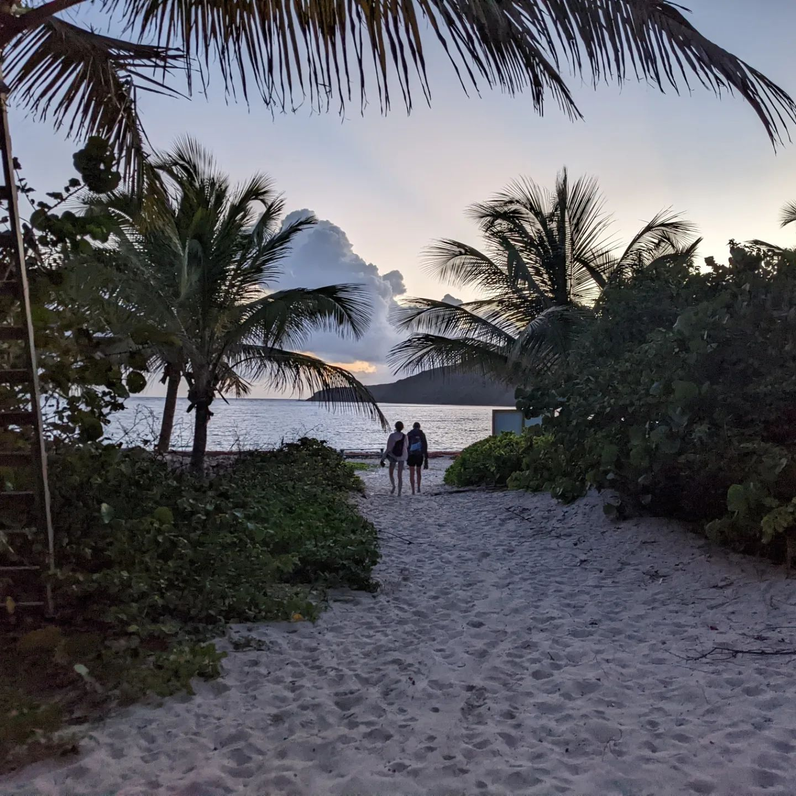
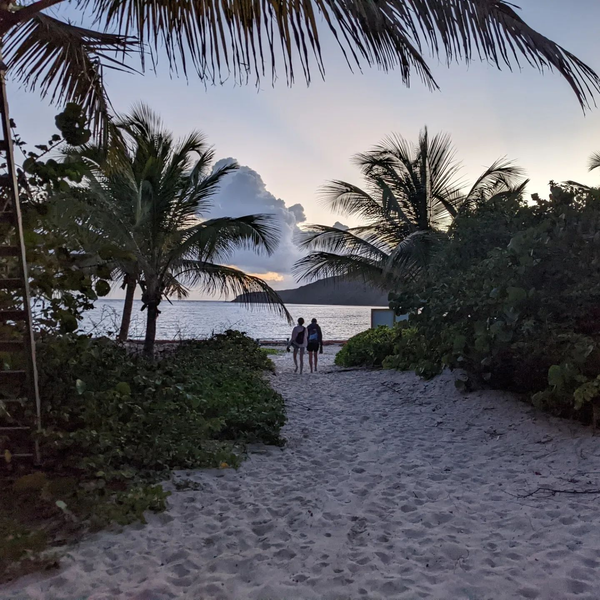

Here is a better look at my hobbies!
Basketball
I love basketball and my favorite team is the Boston Celtics. I was very fortunate to be able to go to the TD Garden to watch the 3rd game of the NBA finals live! You can learn more about the Celtics and other NBA teams here.
Hiking & Travel
I decided to do hiking and travel under one category as they overlap a fair amount. Here is a table to show where I've been somewhere, along with when and how long!
| PLACE: | MONTH: | TIME SPENT: |
|---|---|---|
| Hawaii | February | 1 week |
| Florida | June | 1 week |
| Puerto Rico | August | 2 weeks |
| Maine | September | 3 days |
| DC | November | 5 days |
I will put my favorite places in order below:
- Hawaii
- Puerto Rico
- Maine
- DC
- Florida
Here are a few pictures from my travels.

 
